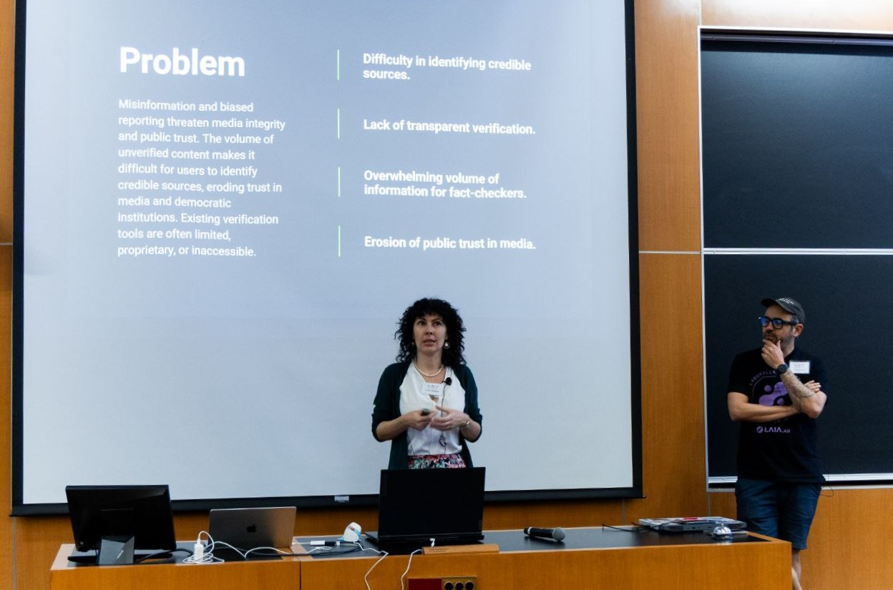

AI Education
Helping learners and educators understand and use AI critically, safely, and productively.
I develop workshops, courses, and educational materials for learners and educators.
My goal is to help people understand what AI is, what it can and cannot do, when it can and cannot be relied on, which parts of our intellectual work we can safely delegate to AI, and when we need to remain independent thinkers.

For learners
I design age-appropriate workshops and courses that help learners understand AI and develop practical skills for using it critically, safely, and responsibly.
Topics can include:
- What generative AI is and how it works
- What AI can and cannot do
- Why AI can produce convincing but incorrect information
- When to trust AI and when to verify its outputs
- Privacy and personal data
- Bias and fairness
- Appropriate and inappropriate uses of AI for academic work
- Using AI to support learning rather than replace thinking
Sessions can include demonstrations, live polls, videos, discussions, practical activities, and reflection.
For educators
I work with educators who are navigating how generative AI is changing teaching, learning, assignments, and assessment.
Workshops and sessions can explore:
- What current AI tools can and cannot do
- How learners are using generative AI
- When AI use supports learning and when it replaces it
- How to design assignments that encourage meaningful thinking
- How AI can be incorporated into learning activities where it adds educational value
- How to establish practical expectations for AI use
- How to approach AI-generated work without relying solely on detection or prohibition
Programs can be adapted to the needs of a particular institution, subject, age group, or educational context.
Why me?
Before moving into technology, I spent several years working as an educator. I later worked in product development and moved into AI evaluation and quality assurance, where I worked directly with AI systems and saw firsthand how they are evaluated, where they fail, and how much human judgment goes into their outputs.
My interest in these questions brought me to Stanford’s Ethics, Technology, and Public Policy program, first as a participant and later as a Cohort Leader. I also participated in the AI & Democracy Hackathon and continue exploring responsible AI and human–AI interaction through my writing and the AI book club I organize.
With all this experience, my goal is to help learners and educators better understand AI and make informed decisions about how to use it wisely in learning and teaching.
Sample workshop
AI Safety & Productivity
A practical, interactive introduction to AI for high school students.
- Age:
- approximately 14–18
- Duration:
- 1–1.5 hours
- Format:
- Interactive presentation with live polling, demonstrations, short videos, activities, and discussion
The workshop helps students develop a realistic understanding of generative AI, its limitations and risks, and how to use AI tools in ways that support rather than undermine learning.
Topics include how generative AI works, AI reliability and hallucinations, privacy and personal data, bias and fairness, responsible AI use, and practical ways to use AI as a learning tool without outsourcing one's thinking.
View the full syllabusInterested in bringing AI education to your learning community?
Workshops and programs can be adapted to different age groups, subjects, and educational needs. If your institution is thinking about how to approach AI in learning and teaching, let’s talk.